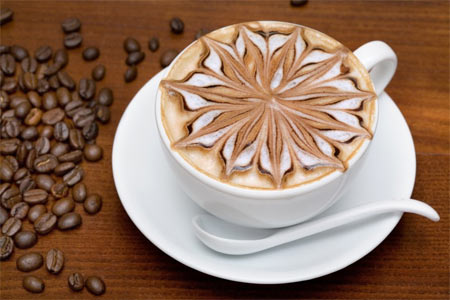

Кофе Латте
 Кофе латте – это кофейный напиток, который состоит из одной части кофе эспрессо, трех частей молока и небольшого количества пены. Его часто посыпают тертым шоколадом или какао. В этот кофе принято добавлять различные сиропы: ванильные, карамельные или любые другие. Этот горячий напиток известен своей светло-коричневой пенкой горячего молока. Подается обычно в прозрачном бокале на ножке. Он является любимым напитком многих людей. Его безупречный аромат и вкус переплетется с изумительным видом. Слоистый кофе, украшенный рисунком не может оставить равнодушным никого. Такой кофе приготовить в домашних условиях практически невозможно, потому что сделать пену правильной формы можно только с помощью специальной техники. Хотя настоящему любителю латте, налить правильно молоко в кофе и сделать хоть и небольшую пену есть возможность и самому, вкус от этого не очень изменится. Мало кто знает, что такое на самом деле кофе латте. Тем более редко можно услышать полное название этого напитка, так как оно выговаривается немного сложнее. Полное название этого трехслойного кофе звучит — латте макиато. С итальянского языка переводится, как «запятнанное молоко». Что касается кофейной терминологии, то такое название означает слоистый коктейль, который состоит из готового эспрессо, горячего молока и пены. Первоначально латте предназначалось для детей, чтобы они могли пить кофе наравне с взрослыми, чего дети так часто хотят. Тем более что количество кофеина из-за такого большого количества молока значительно уменьшалось. В наше время латте крайне популярен среди деловой молодежи, особенно в Западной и Центральной Европе.